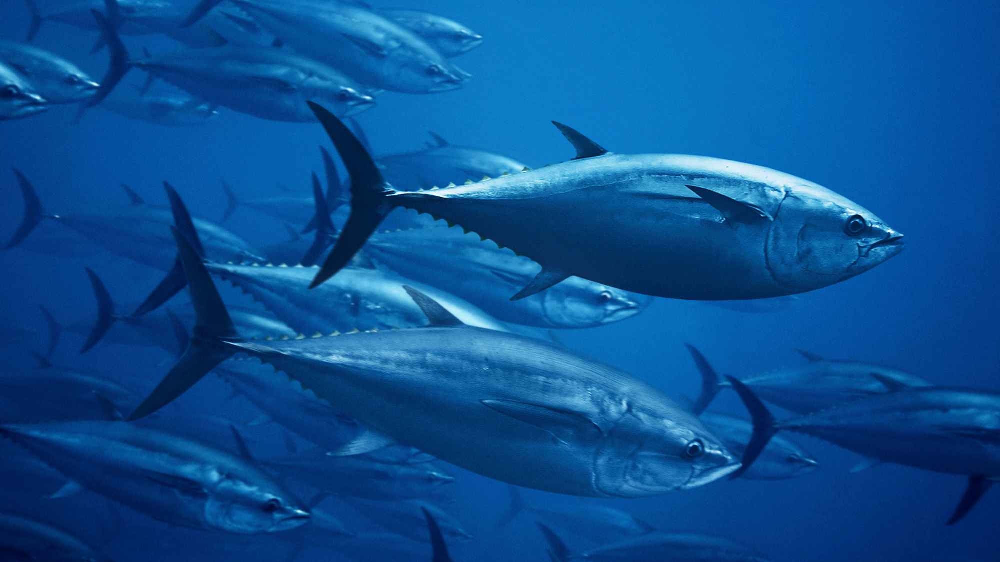
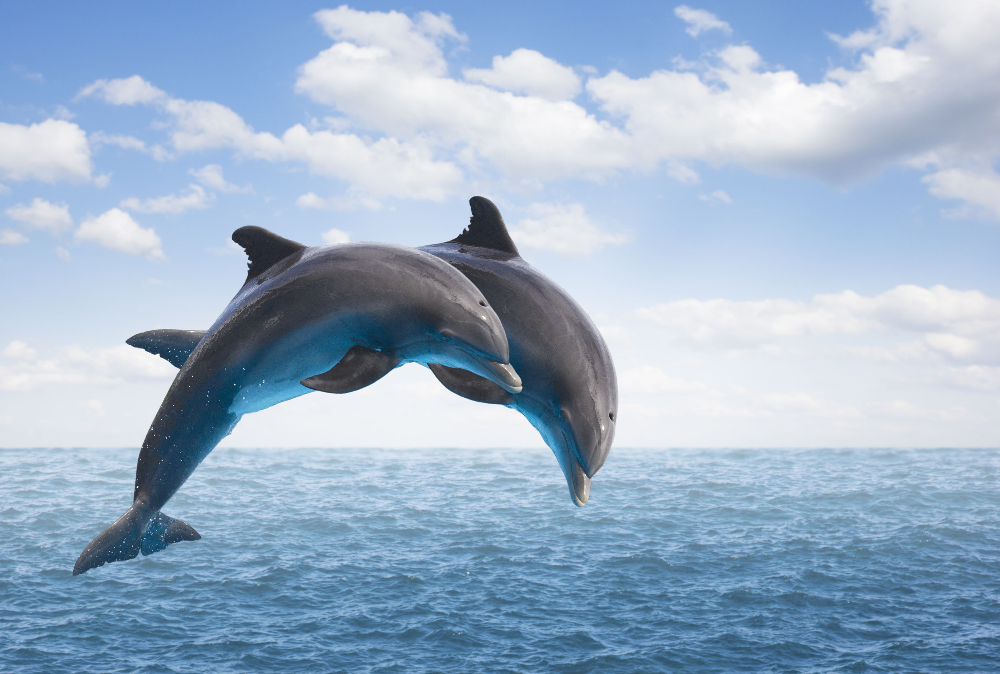
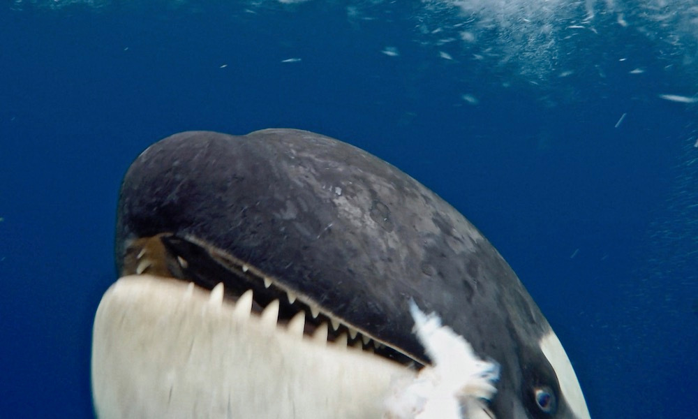
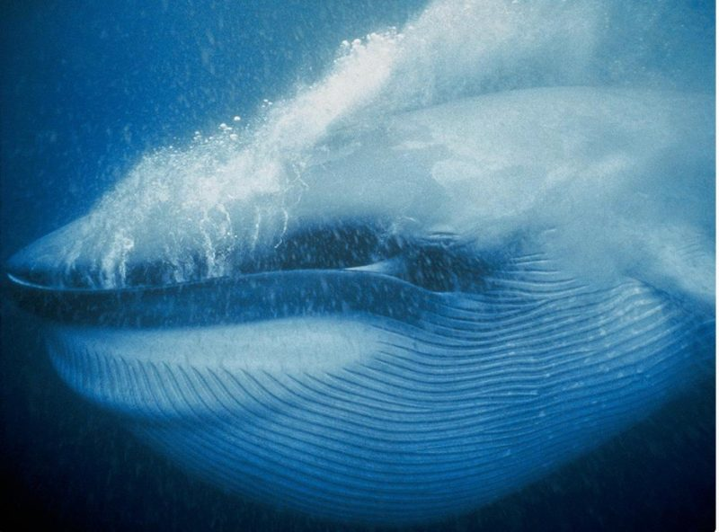
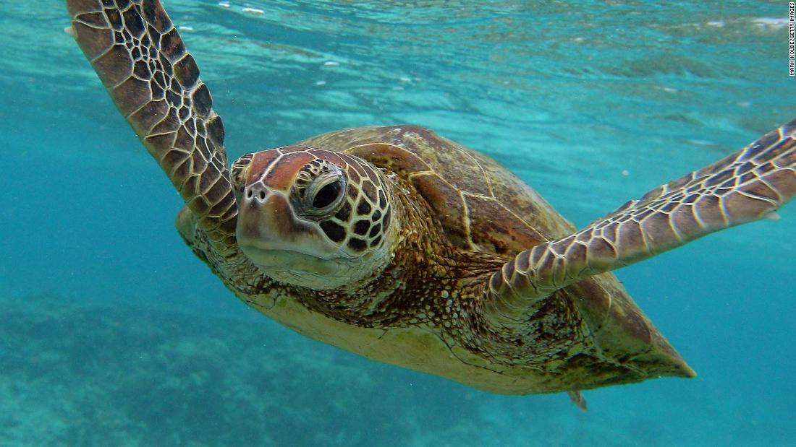
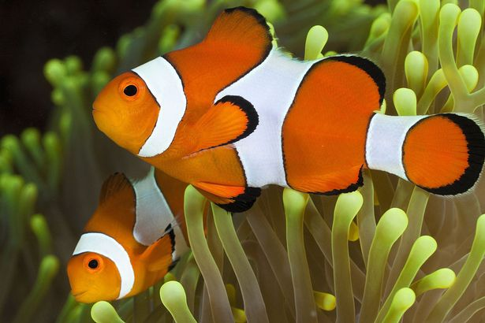
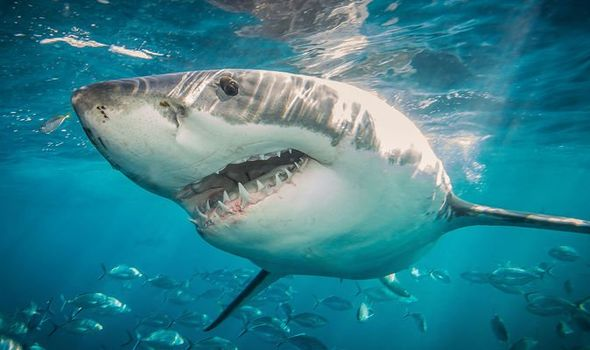
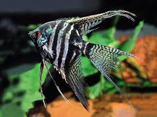
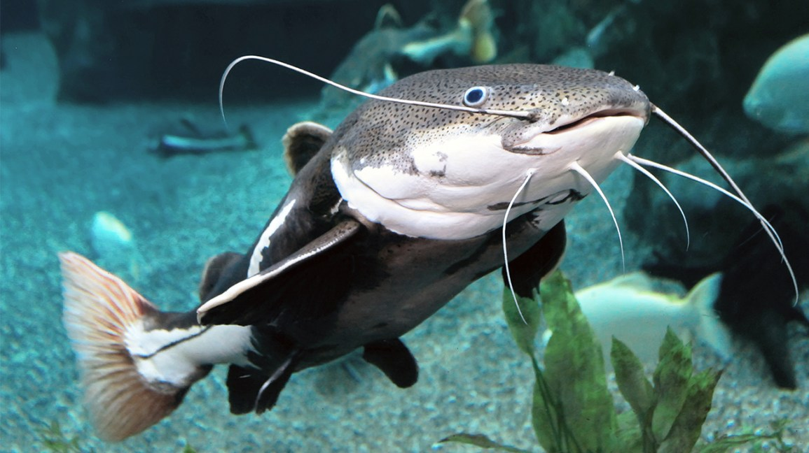

The Epipelagic Zone
The Sunlight Zone
The epipelagic (upper open ocean) zone is the part of the ocean where there is enough sunlight for algae to utilize photosynthesis (the process by which organisms use sunlight to convert carbon dioxide into food). Generally speaking, this zone reaches from the sea surface down to approximately 200 m. The epipelagic is home to all sorts of iconic animals, like whales and dolphins, billfishes, tunas, jellyfishes, sharks, and many other groups. Algae that live in the epipelagic zone are responsible for much of the original food production for the entire ocean and create at least 50% of the oxygen in the atmosphere (both through photosynthesis). Organisms that live in the epipelagic zone may come into contact with the sea surface.
Marine Life








